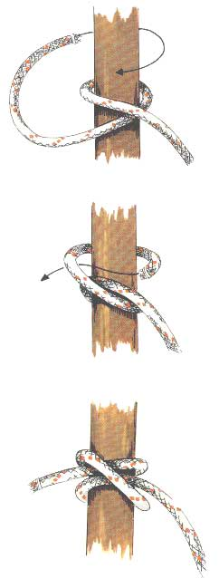

Mastworp
Gebruik
Deze eenvoudige maar veelzijdige knoop wordt veel toegepast voor het beginnen van een sjorring, het afmeren van boten, het ophangen van stootwillen aan de reling en het bevestigen van lijnen aan palen, bolders en rondhouten. De knoop werkt goed zolang de trekkracht constant is en haaks staat op het aanhechtingspunt. De mastworp heeft echter ook de neiging om los te werken, en paradoxaal genoeg kan hij zich ook beknijpen wanneer het touw nat is. De breeksterkte ligt tussen de 60 en 75 %. Voor een grotere veiligheid kan men van de overblijvende tamp nog twee halve steken maken.
Methode
Deze knoop lijkt een beetje op de letter N (fig. 1-2). Leg een lus rond de paal. Als het touw de gewenste lengte heeft, leg je simpelweg een tweede lus met het werkende eind (= het uiteinde van het touw waarin de knoop wordt gelegd) aan de onderzijde op de eerste. Gebruik best wel een extra steek om de mastworp te borgen. Zorg ervoor dat de trekrichting constant blijft.
